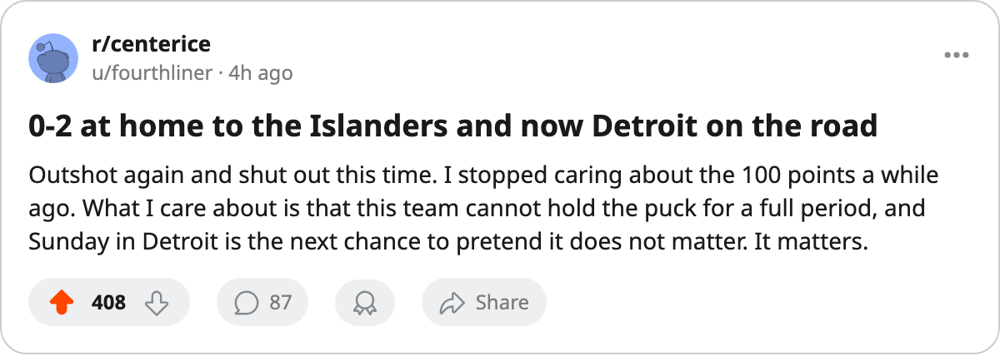

Leafs 0, Islanders 2: 33 shots against at home, and Hasek waits in Detroit
Toronto has 100 points and the East's best record. Friday put the shot count back at the top of the page.
 Sam OkaforLeafs beat reporter · Queen City Telegram
Sam OkaforLeafs beat reporter · Queen City Telegram
 New York Islanders beat
New York Islanders beat  Toronto Maple Leafs 2-0 at the Air Canada Centre on Friday. Sunday the Leafs visit
Toronto Maple Leafs 2-0 at the Air Canada Centre on Friday. Sunday the Leafs visit  Detroit Red Wings, where
Detroit Red Wings, where  Dominik Hasek86 is back in the goal and the Red Wings have won 4 straight.
Dominik Hasek86 is back in the goal and the Red Wings have won 4 straight.
The loss leaves Toronto at 43-11-4 for 100 points, still 30 clear of Boston in the Northeast. It ended a 3-game Toronto win streak, and it came with the shot count running the way it has run all month: the Islanders put 33 shots on the Toronto net, Toronto put 28 on theirs, and the Leafs did not score.
The Leafs scored 5, 3 and 3 in the three wins before Friday's. They have 308 goals in 63 games and have allowed 158, the fewest against in the league.
Eminger in, Salo out
Steve Eminger77 takes the sweater  Sami Salo82 had, and goes in on the top pair beside
Sami Salo82 had, and goes in on the top pair beside  Jiri Fischer85. Eminger, 21, has played 45 games and has 20 points at 16.2 minutes a night. Salo, 30, has 8 points in 27 games at 17.7 minutes.
Jiri Fischer85. Eminger, 21, has played 45 games and has 20 points at 16.2 minutes a night. Salo, 30, has 8 points in 27 games at 17.7 minutes.
Toronto has nobody on the injured list. The change is a coach's choice, not a body.
Hasek is back
Detroit is 27-23-5, 73 points, and 22-10 at home, with 4 straight wins. Hasek, 39, is dressed and at the top of the depth chart.  Curtis Joseph84 backs him up and
Curtis Joseph84 backs him up and  Manny Legace83 is out of the rotation.
Manny Legace83 is out of the rotation.
The Red Wings carry 5 men on the injured list:  Pavel Datsyuk70 (ankle, out to 2005-03-13),
Pavel Datsyuk70 (ankle, out to 2005-03-13),  Henrik Zetterberg70 (arm, 2005-03-04),
Henrik Zetterberg70 (arm, 2005-03-04),  Tomas Holmstrom68 (concussion, 2005-05-03),
Tomas Holmstrom68 (concussion, 2005-05-03),  Kevyn Adams68 (wrist, 2005-03-17) and Michael Zigomanis68 (back, 2005-03-13).
Kevyn Adams68 (wrist, 2005-03-17) and Michael Zigomanis68 (back, 2005-03-13).
The clubs have met once this season. Toronto won it 9-1.
After Detroit, Toronto is home to Carolina on 2005-03-01 and Florida on 2005-03-03, then away at Ottawa on 2005-03-04.
